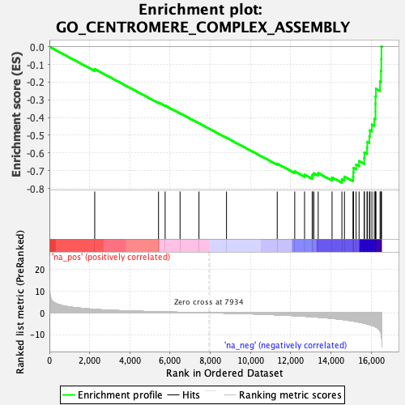
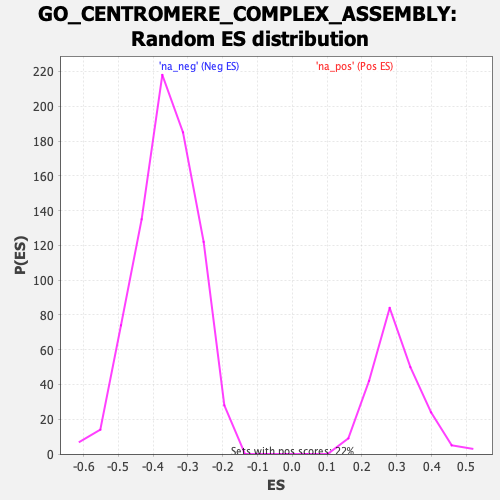

| | | Dataset | DE_genes2 |
| Phenotype | NoPhenotypeAvailable |
| Upregulated in class | na_neg |
| GeneSet | GO_CENTROMERE_COMPLEX_ASSEMBLY |
| Enrichment Score (ES) | -0.7681191 |
| Normalized Enrichment Score (NES) | -2.1233737 |
| Nominal p-value | 0.0 |
| FDR q-value | 0.0 |
| FWER p-Value | 0.0 |
Table: GSEA Results Summary

Fig 1: Enrichment plot: GO_CENTROMERE_COMPLEX_ASSEMBLY
Profile of the Running ES Score & Positions of GeneSet Members on the Rank Ordered List
| PROBE | GENE SYMBOL | GENE_TITLE | RANK IN GENE LIST | RANK METRIC SCORE | RUNNING ES | CORE ENRICHMENT | | 1 | CENPT | | | 2253 | 1.586 | -0.1260 | No |
| 2 | POGZ | | | 5425 | 0.465 | -0.3151 | No |
| 3 | RNF4 | | | 5755 | 0.393 | -0.3324 | No |
| 4 | TRAPPC12 | | | 6496 | 0.246 | -0.3756 | No |
| 5 | CENPW | | | 7436 | 0.075 | -0.4320 | No |
| 6 | CENPV | | | 8805 | -0.152 | -0.5139 | No |
| 7 | POLE3 | | | 11326 | -0.937 | -0.6604 | No |
| 8 | RUVBL1 | | | 12197 | -1.323 | -0.7043 | No |
| 9 | CENPL | | | 12686 | -1.583 | -0.7233 | No |
| 10 | CENPP | | | 13066 | -1.809 | -0.7341 | No |
| 11 | RBBP4 | | | 13080 | -1.817 | -0.7227 | No |
| 12 | CENPM | | | 13147 | -1.858 | -0.7143 | No |
| 13 | CENPO | | | 13365 | -2.007 | -0.7140 | No |
| 14 | RBBP7 | | | 14053 | -2.553 | -0.7385 | No |
| 15 | CENPU | | | 14542 | -3.039 | -0.7478 | Yes |
| 16 | MIS12 | | | 14669 | -3.210 | -0.7339 | Yes |
| 17 | CENPN | | | 15099 | -3.785 | -0.7345 | Yes |
| 18 | MIS18A | | | 15108 | -3.798 | -0.7095 | Yes |
| 19 | CENPI | | | 15122 | -3.810 | -0.6848 | Yes |
| 20 | ITGB3BP | | | 15248 | -4.001 | -0.6656 | Yes |
| 21 | NPM1 | | | 15396 | -4.274 | -0.6458 | Yes |
| 22 | CENPC | | | 15651 | -4.807 | -0.6290 | Yes |
| 23 | OIP5 | | | 15659 | -4.836 | -0.5970 | Yes |
| 24 | NASP | | | 15792 | -5.106 | -0.5708 | Yes |
| 25 | RB1 | | | 15805 | -5.145 | -0.5370 | Yes |
| 26 | SMARCA5 | | | 15909 | -5.412 | -0.5070 | Yes |
| 27 | HELLS | | | 15936 | -5.474 | -0.4719 | Yes |
| 28 | RSF1 | | | 16033 | -5.770 | -0.4390 | Yes |
| 29 | SENP6 | | | 16153 | -6.132 | -0.4051 | Yes |
| 30 | HJURP | | | 16210 | -6.380 | -0.3658 | Yes |
| 31 | CENPH | | | 16211 | -6.387 | -0.3230 | Yes |
| 32 | CENPQ | | | 16214 | -6.395 | -0.2802 | Yes |
| 33 | MIS18BP1 | | | 16234 | -6.494 | -0.2378 | Yes |
| 34 | CENPA | | | 16438 | -8.139 | -0.1956 | Yes |
| 35 | CENPK | | | 16485 | -9.298 | -0.1361 | Yes |
| 36 | CENPE | | | 16501 | -10.010 | -0.0699 | Yes |
| 37 | CENPF | | | 16507 | -10.688 | 0.0015 | Yes |
Table: GSEA details [plain text format]

Fig 2: GO_CENTROMERE_COMPLEX_ASSEMBLY: Random ES distribution
Gene set null distribution of ES for GO_CENTROMERE_COMPLEX_ASSEMBLY